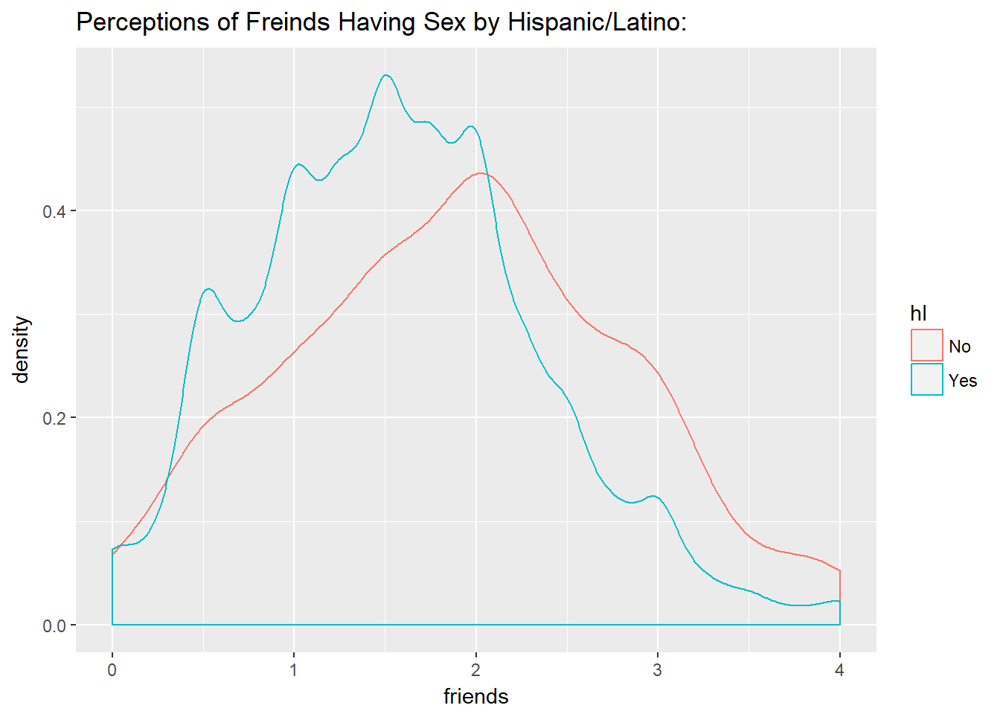
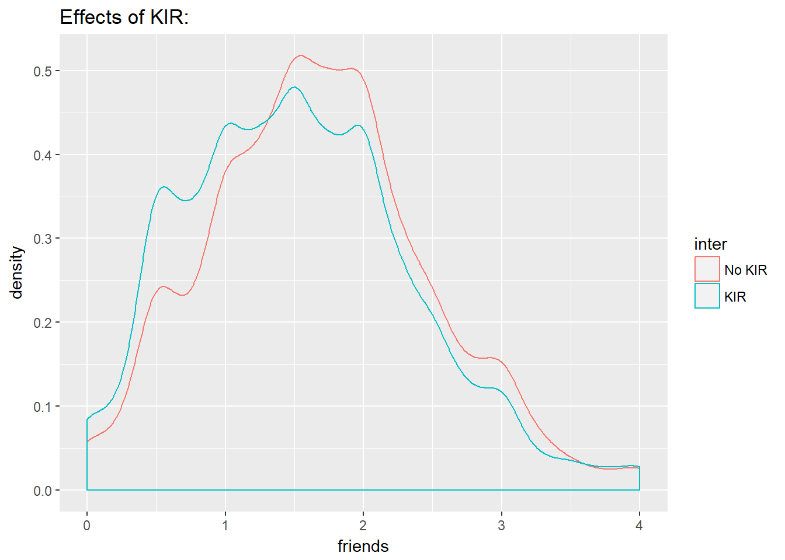

Once again, the data came from a project that sought to help middle school and high school students understand that their peers weren’t as sexually active as they believed. The intervention variable was basically extra sexual education. Our group was given the variable Hispanic/Latino (hl), perceptions of their friends sexual activity (friends), and whether they had the intervention (inter)
After cleaning the data we wanted to see whether Hispanic/Latino students had a different perception about their peers than non-Hispanic/Latino students.

The friends variable is a psuedo-continuous variable that goes from 0-4. A 0 means that the student does not think and friends are having sex and a 4 means that the student thinks that all of their friends are having sex. It definitely looks like Hispanic/Latino students think that less of their peers are having sex, but we’ll do a t test to be more sure.
| Test statistic | df | P value | Alternative hypothesis |
|---|---|---|---|
| 9.248 | 938.9 | 1.505e-19 * * * | two.sided |
| mean in group No | mean in group Yes |
|---|---|
| 1.886 | 1.567 |
There is strong evidence that Hispanic/Latino and non-Hispanic/Latino students have different perceptions about their friends having sex (p = 1.505e-19).
Next we wanted to see if the KIR intervention did what it sought out to do. We compared students that had the intervention and students that did not have the intervention.

We can see that students the were in the intervention have a lower perception score about their friends having sex. Again we’ll do a t test to be more sure.
| Test statistic | df | P value | Alternative hypothesis |
|---|---|---|---|
| 7.001 | 6328 | 2.807e-12 * * * | two.sided |
| mean in group No KIR | mean in group KIR |
|---|---|
| 1.674 | 1.533 |
There is strong evidence that KIR did effect students perceptions of their friends having sex (p = 2.807e-12).
Finally, we looked to see if KIR had a different level of effect in students that are Hispanic or Latino. We did this by creating a linear model and checking if the variables were significant.
##
## Call:
## lm(formula = model)
##
## Residuals:
## Min 1Q Median 3Q Max
## -1.95404 -0.56354 0.00246 0.50246 2.50246
##
## Coefficients:
## Estimate Std. Error t value Pr(>|t|)
## (Intercept) 1.95404 0.03012 64.876 <2e-16 ***
## interKIR -0.14051 0.02010 -6.992 3e-12 ***
## hlYes -0.31600 0.03047 -10.370 <2e-16 ***
## ---
## Signif. codes: 0 '***' 0.001 '**' 0.01 '*' 0.05 '.' 0.1 ' ' 1
##
## Residual standard error: 0.7938 on 6241 degrees of freedom
## (155 observations deleted due to missingness)
## Multiple R-squared: 0.02484, Adjusted R-squared: 0.02452
## F-statistic: 79.48 on 2 and 6241 DF, p-value: < 2.2e-16With a p value of 2e-16 we can see that the KIR intervention is different for Hispanic/Latino students.